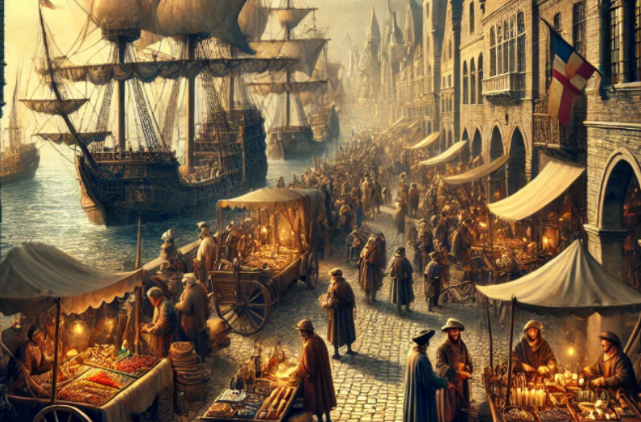

"Feudalismo":
*Es el régimen político, económico y social que se desarrolló en Europa durante la Edad Media,
entre los siglos IX y XIV (9-14), de igual manera por la conformación de estructuras de poder descentralizado.
Surgimiento del Feudalismo
Economía Feudal
Señorío Feudal
Sociedad Feudal
Acto de Vasallaje
la vida medieval de los campesinos y los señores feudales
transformación de la agricultura
las cruzadas

expansión del comercio
crisis del ciclo XIV